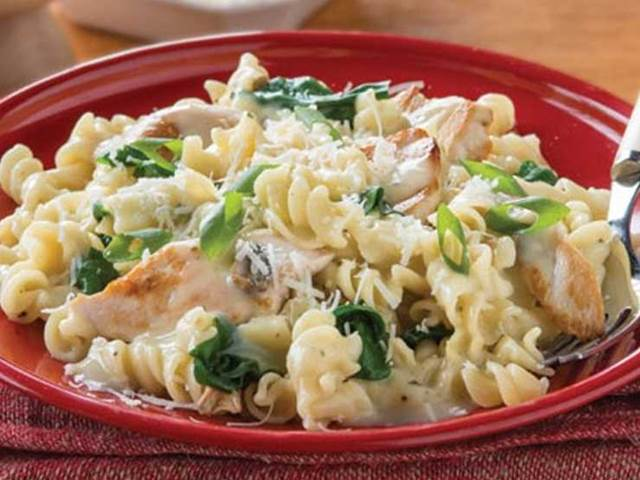

Creamy Spinach Chicken

Description
A nice quick dish -- there's never enough spinach! :-)
You can serve this dish with gnocci or with any pasta.
Ingredients
- 500g of chicken breasts
- 500g of frozen spinach leaves
- 400ml of cream
- 1 large onion
- 4 cloves of garlic
- salt
- pepper
- olive oil
Steps
- Put olive oil to a pan. Add chopped onion, and after a while add garlic.
- Add chicken breasts along with salt and pepper and roast them in the pan.
- Add spinach and let it unfreeze.
- Add cream and boil for about 15 minutes.
- Add salt and pepper as needed.
- Serve with gnocci or any pasta.
Last cooked in 2021.